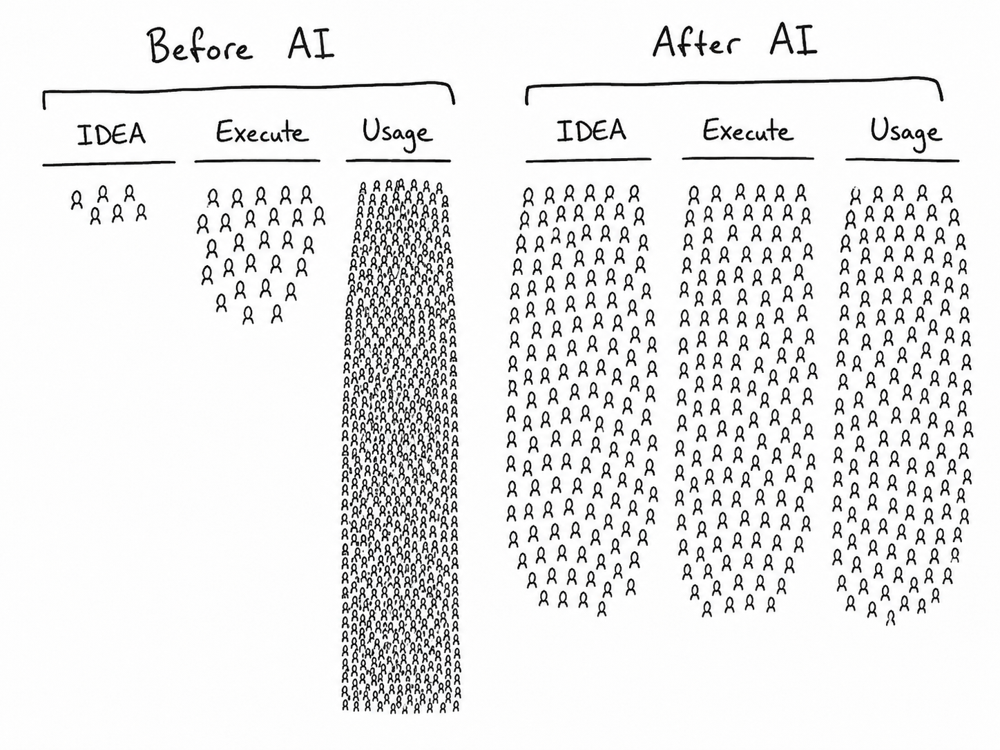

axm-aide journals, tracks tasks, and records agent work sessions as genesis-sealed shards — detached-verifiable forever — makes them queryable, and proposes actions it never executes. It keeps custody of your memory. It surrenders the decision.
Every other assistant asks you to trust its memory and its judgment. This one has auditable memory and surrenders judgment.
axm-aide is the personal-assistant spoke of the AXM ecosystem. It journals your entries, tracks your tasks, and records what an agent work session read, produced, and wants to happen next — each as its own genesis-sealed shard, detached-verifiable forever against an out-of-band key.
It does not email anyone. It does not deploy, purchase, or delete anything. Every action it can imagine gets written down as a proposal and handed to a human. The aide is memory with custody, not an actor with authority.
Before AI, a few people ideate, some execute, and everyone uses. After AI, the tooling lets everyone do all three at once. That collapse is the opportunity and the danger.
An assistant that can execute is an assistant that can act without you. axm-aide takes the opposite stance: it will remember everything, structure it, and surface it — but it will not act. Every action it can imagine is written down as a proposal and handed to a human.

Each kind is sealed as its own signed Genesis v1 shard through the same kernel path (compile_generic_shard). The aide never mints a shard id — genesis derives sh1_… from the sealed manifest bytes.
An entry, sealed verbatim after canonical normalization, plus a recorded_at claim and one tagged claim per caller tag. Tags are CALLER-supplied only — never inferred. Zero tags yields zero tagged claims; the aide summarizes nothing into a claim.
A title and a caller-declared declared_status (open / done / dropped), append-only as superseding shards. A status change is a NEW shard; a sealed shard is never rewritten. The task's current status is whatever the latest shard declares.
What an agent work session read, produced, and PROPOSED. Every proposal is sealed verbatim and carries requires_disposition "human". It confers no authority — the session records; it does not act.
Every proposal a session seals carries requires_disposition "human" as a tier-0 claim, sealed with the bytes. There is no path in the code that turns a proposal into an action — the aide cannot email, deploy, purchase, or delete. Execution, if it happens at all, happens downstream of a human disposition, through a review flow the aide does not control.
sh1_… from the sealed manifest bytes. One custody model, no second.| Disposition | Meaning |
|---|---|
| escalate | Act on it / route it onward for action. |
| dismiss | No — drop it. |
| needs_context | Not enough to decide — send it back. |
axm-aide brief verifies every aide shard DETACHED against an out-of-band publisher key before it touches anything — never a shard's own embedded key. A shard that does not PASS is skipped and named, never silently included.
Survivors mount through axm-core's Spectra engine — the same read side axm ask uses — and the brief lists open tasks, recent journal entries by id and tags (never summaries), and pending proposals with no matching human disposition yet. Every brief ends with a provenance footer naming every shard consulted.
Every aide_* shard is checked against the pool's publisher.pub (or an explicit --trusted-key). Never the shard's own embedded key.
Only PASS-ing shards mount into axm-core's SpectraEngine — the same read side axm ask uses. A shard that fails is named in a SKIPPED list, never silently dropped.
Open tasks by latest declared_status. Recent journal by id, tags, and time. Pending proposals with no matching disposition claim.
Every shard id consulted is printed. The evidence-tier line closes every brief.
$ axm-aide brief axm-aide brief ============================================================ OPEN TASKS (1) - [task/ab12cd] Ship axm-aide v0 due 2026-07-15 RECENT JOURNAL (last 5) - 2026-07-06T09:14:02Z [journal/9f3a1b] #insight #doctrine (entries are listed by id, tags and time — not summarized) PENDING PROPOSALS (1) - [proposal/3c7e21.1] Email the quarterly report to finance requires_disposition: human (escalate | dismiss | needs_context) Proposals are sealed records, not actions. Nothing here has been executed; each awaits a human disposition in the review flow. ------------------------------------------------------------ provenance: 3 shard(s) consulted (verified, out-of-band key) sh1_e30deb2381f9c4a2b7d6e105f8ac3d4e21 sh1_7db1e326e5a08c4f912db3a6570b7d3c sh1_0a5beabfcf3d19b7e824a601953165ab evidence tier: agent_record — caller-declared statements, sealed and verifiable; nothing here is a verified fact about the world.
Every aide shard carries content/aide_manifest.json stamping its evidence tier with the bytes, so the limits travel with the record and cannot be lost from a downstream copy.
Not on PyPI. The seal path (journal / task / session / verify) needs only the pinned genesis kernel. brief additionally needs axm-core installed alongside it.
# Pinned genesis kernel — the only hard dep for the seal path pip install "axm-genesis @ git+https://github.com/BigBirdReturns/axm-genesis.git@9074e7fb2e9cedde692b248cdd0c6a805e77d8ac" # brief additionally needs axm-core (Spectra read side) pip install -e ../axm-core pip install -e . # the aide # seal-only, no query runtime: pip install -e '.[minimal]'
# Seal a journal entry (tags are yours; nothing is inferred) axm-aide journal "Realized the aide should never summarize" \ --tag insight --tag doctrine ✓ sealed journal: 9f3a1b # Track a task axm-aide task add "Ship axm-aide v0" --due 2026-07-15 axm-aide task done <task_id> # a NEW shard; original never rewritten # Record what a session did — and what it PROPOSES axm-aide session record \ --read sh1_… --produced sh1_… \ --propose "Email the quarterly report to finance" # The morning read axm-aide brief # Verify offline (exit 0 pass / 1 fail / 2 no anchor) axm-aide verify
# axm-genesis — cryptographic kernel # BLAKE3 + ML-DSA-44 + axm-verify # axm-core — Spectra + Forge + DuckDB runtime # axm-aide — this spoke # journal / task / session / brief / verify # Registered under axm.spokes, so once axm-core discovers # the installed spoke, the same verbs run under: axm aide journal "…" axm aide brief
# Not on PyPI — this is a source / git checkout install. # Suite: 31/31 on the pinned genesis kernel + the axm-core read # side (seal + verify + brief↔Spectra), verified locally. # CI runs the same on every push; a skip is treated as a failure. # Shards live in ~/.axm/shards/aide_* # Keys live in ~/.axm/keys (publisher.sk / publisher.pub)